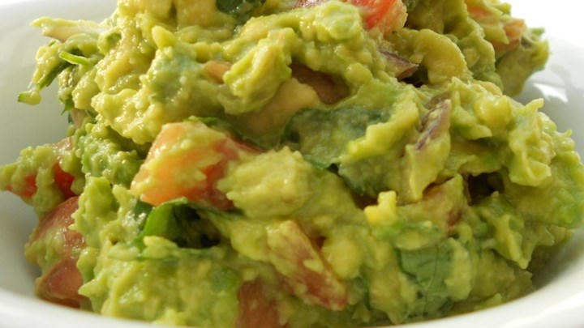

1 3.75-ounce package cellophane (bean thread) or thin rice noodles
1 tablespoon olive oil
8 ounces shiitake or other mushrooms, stems discarded and caps thinly sliced
6 cups vegetable or low-sodium chicken broth
2/3 cup low-sodium soy sauce
2 tablespoons grated fresh ginger
1 teaspoon chili sauce or hot pepper sauce to taste (optional)
4 scallions (green and white parts), thinly sliced
4 carrots, thinly sliced
8 ounces green beans, trimmed and cut into 2-inch pieces
Instructions:
Prepare the noodles according to the package directions. Drain and cut into 3-inch lengths.
Meanwhile, heat the oil in a large saucepan over medium-high heat. Add the mushrooms and cook, stirring occasionally, for 2 minutes.
Add the broth, soy sauce, ginger, and chili sauce (if desired) and combine. Bring to a boil.
Add the scallions, carrots, and green beans. Simmer until the vegetables are tender, 5 to 6 minutes.
Guacamole

Ingredients:
3 avocados - peeled, pitted, and mashed
1 lime, juiced
1 teaspoon salt
1/2 cup diced onion
3 tablespoons chopped fresh cilantro
1 teaspoon minced garlic
2 roma (plum) tomatoes, diced
1 pinch ground cayenne pepper (optional)
Instructions:
In a medium bowl, mash together the avocados, lime juice, and salt. Mix in onion, cilantro, tomatoes, and garlic. Stir in cayenne pepper. Refrigerate 1 hour for best flavor, or serve immediately.